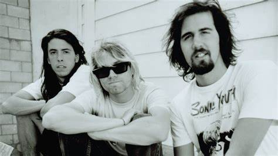
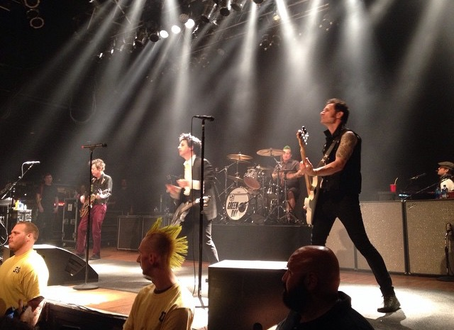

- Nirvana 
- Oasis
- Green Day 
A 1990s band who were named as the "spokesman band" and he generation's music of Grunge. Very Underrated band aswell.

A Britpop band know mainly for Album (What's the Story) Morning Glory? Which sold over 22 million copies, one of the best selling albums.
Played concerts wen they were 13 and 14 as young teens. Now in there 40s still aged very well. Dookie, their most famous album is why their still very important today. Still Active too.